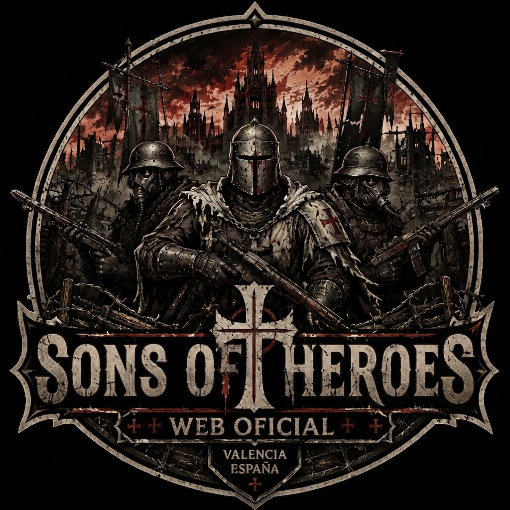

Eventos
Partidas abiertas todas las semanas.

Únete al primer club dedicado a Trench Crusade en la Comunidad Valenciana. Organiza partidas, campañas narrativas, ligas, eventos y comparte tu pasión por este increíble universo.
Trench Crusade es un juego de miniaturas de fantasía oscura ambientado en una Primera Guerra Mundial alternativa, donde la humanidad combate contra fuerzas demoníacas en una guerra santa interminable.
Partidas abiertas todas las semanas.
Clasificaciones y temporadas.
Vive campañas narrativas únicas.
Tutoriales, impresión 3D y STL.
Muy pronto anunciaremos nuestra primera partida abierta.
Estamos preparando una colección completa de escenografía para campañas.
Buscamos nuevos jugadores de todos los niveles.